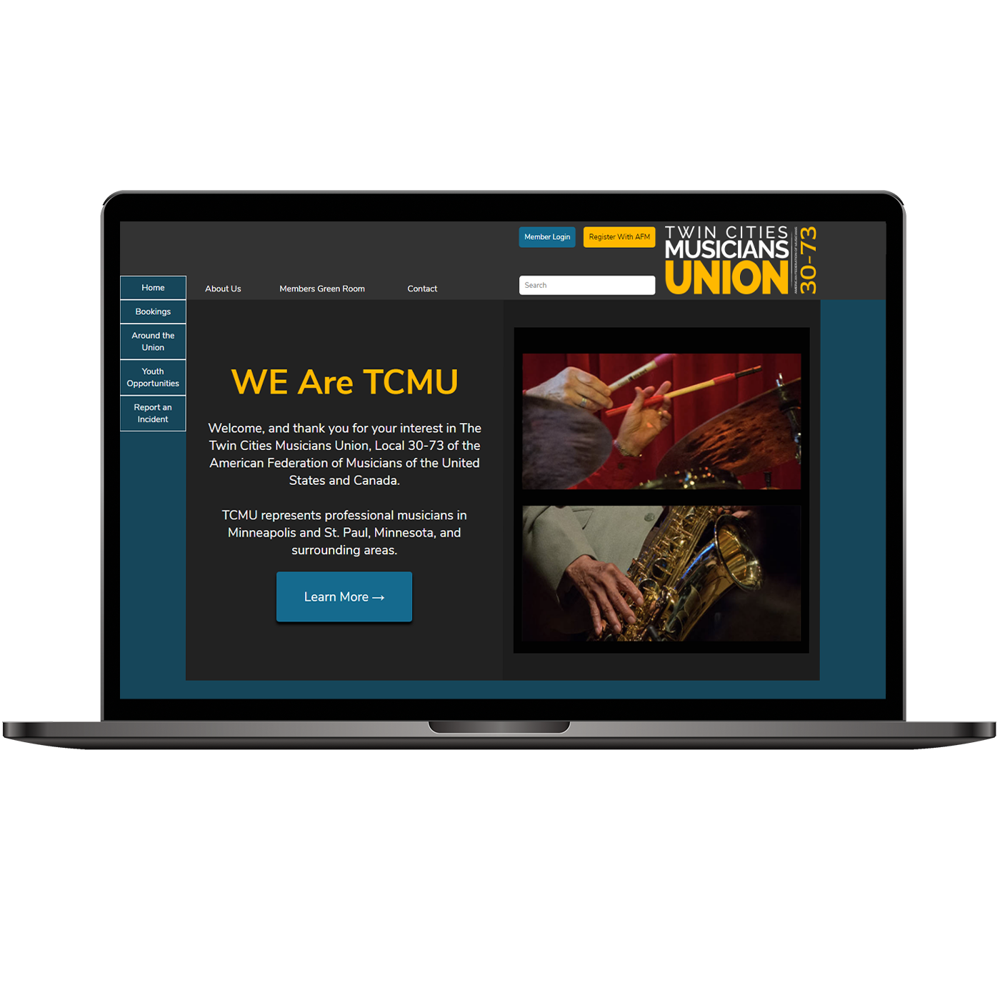
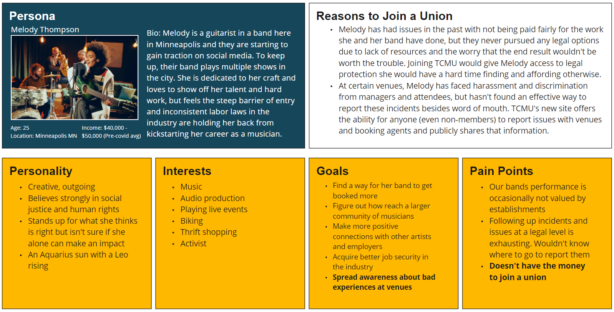
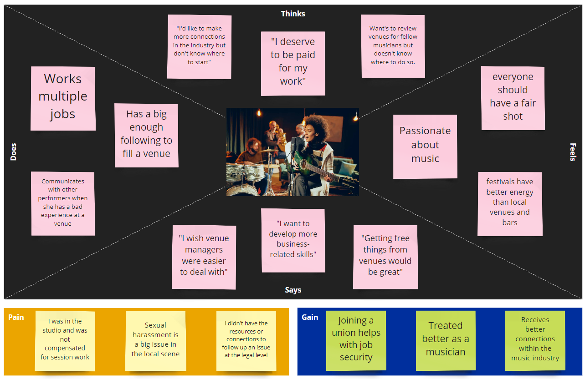
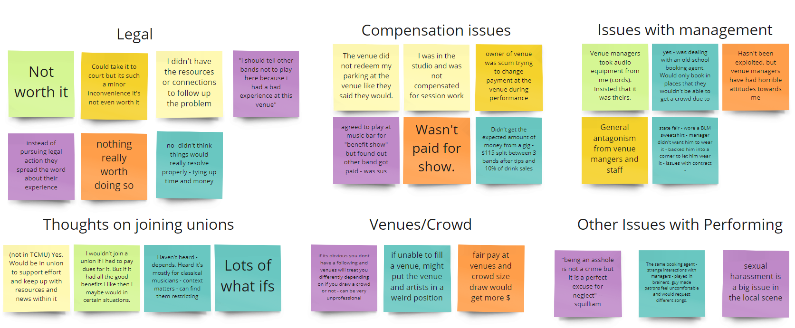
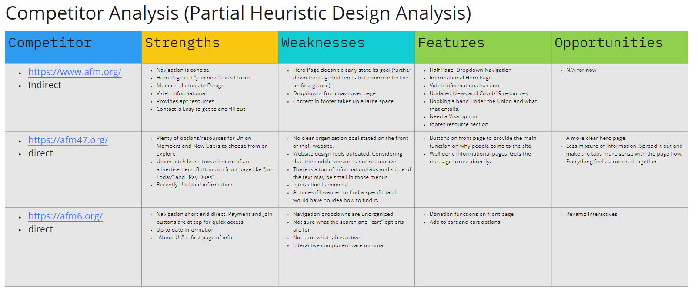
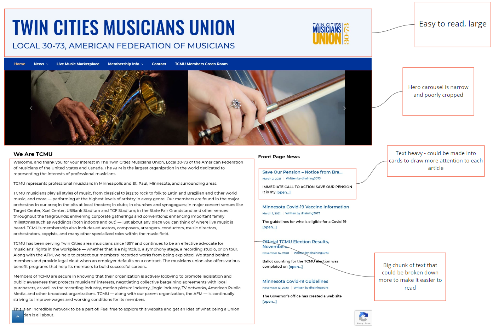
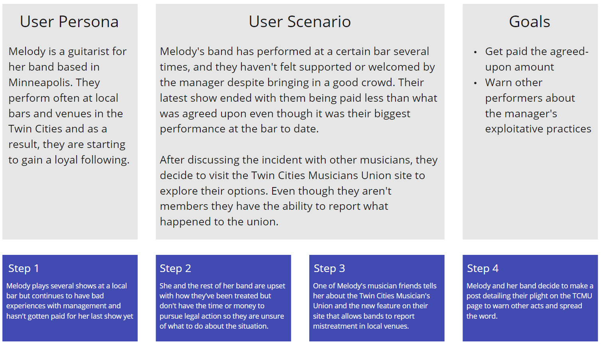
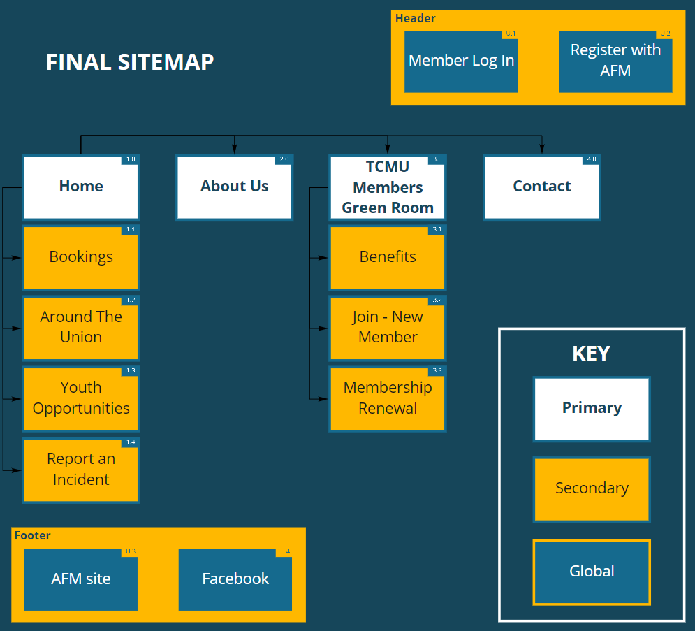

Twin Cities Musicians Union - An Informational With a TON Of Potential
UX/UI Case Study
Overview
TCMU Is a local Muscians Union that has been serving Twin Cities Musicians since 1987. They Advocate for for musicians’ rights in the workplace. Whether it is a nightclub, a symphony stage, a recording studio, or on tour. But what about this site is missing? What does it try to accomplish, but doesn't quite get there? See how our group redesigned and provided value in a Union website.
The Problem
Twin Cities Musicians Union exclusively provides benefits for paying members, effectively excluding any musicians who might consider joining their union but don't necessarily have the means to do so at the moment. How might we expand our services so musicians who aren't members have support within the local community?
The Solution
We believe that adding community driven features that are accessible to anyone on the internet will create a support system for less established musicians, increase traffic to the Twin Cities Musicians Union site, and result in more members for the union and closer ties with the local music scene.
Tools Used


Live Demo Of Work
DISCLAIMER: Mobile responsiveness is not prepared yet. View on desktop screen sizes around a width 1440px for best results
Phase 1: Research and Ideation
Our group brainstormed a Persona based off interviews (from muscicians) that would use the Twin Cities Muscians Union website.
We also took our interview information and created an empathy map.
User Interview Data and Responses
Interview Goals:
- Learn more about frustrations they face when navigating the workforce, both in and out of a union
- Find out what barriers of entry, if any, are preventing more people from learning about TCMU and/or seeking legal representation from them
Questions:
- Have you heard about Twin Cities Music Union before?
- Yes - Anything specific? How did you hear about them? Are you a member?
- No - Would you have any interest in joining a union for musicians?
- Have you ever felt like you've been exploited while working in the music industry?
- Did you attempt to follow up on a legal level?
- Yes - How did that turn out?
- No - What stopped you from doing so?
- Have you ever had a negative experience performing when you felt unsupported by the venue or whoever hired you?
- If you were to join a union, what do you think the primary benefit would be?
- Would you have any concerns?
Most Insightful Responses:
- I didn't have the resources or connections to follow up on taking legal action towards being exploited at a venue.
- Wasn't paid for show (several similar responses)
- General antagonism from venue mangers and staff
- Joining a Union comes with heavy baggage. For example, paying to join and such. If I don't want to pay and still be involved?
- Musicians must get paid for their work and treated like people rather than jukeboxes
- It would be nice to Make sure certain venues that practice "bad business" don't get business.
- Access to more opportunities, knowing the right people to email
Affinity Diagram And Pathway
What these responses lead to:
There seemed to be a clear distinction of how people felt about their musician related problems not being heard and how there is no place to go to share them. TCMU is currently only an informational site for Union members. How can we make TCMU a central hub for everyone having problems in the music industry?
Phase 2: Analysis
Other Union Websites and What They Are Doing
We looked at other states musicians union's websites mainly from a place like California, where the music business is very saturated. It was interesting, they seemed to look way out of date. But they did things particularily well when it comes to hierarchy. Important buttons are at the top. And there organization of information was on point. Unfortunately, none of the sites featured a clear way for non members to get involved. The Competitor analysis was more looking for heuristic ideas.
Nielson Norman Heuristic Analysis of Current Site
- Visibility of system status
- All navigation has hover/active states except for the "TCMU Members Green Room" tab which is missing an active state
- Match between system and the real world
- Reasonably clear terminology, very text heavy though
- No icons present other than an up arrow to return to the top of the page
- User control and freedom
- Main logo is easily accessible from every page and links back to home on click
- Consistency and standards
- Every page in the News dropdown has a different name but the same layout with little to no pictures. It's not clear what each of these sections is meant for, or if all of them are even news related.
- Error prevention
- Contact form has some error prevention that won't let users submit without their name or email
- Recognition rather than recall
- Site is very informational and there is not any content that fits in the criteria of this standard
- Flexibility and efficiency of use
- Using tab to sort through text fields. There are no text accessibility features though.
- Aesthetic and minimalist design
- The design is very minimal and repetitive over every page. Every page looks almost identical.
- Help users recognize, diagnose, and recover from errors
- Only has error prevention with pop ups in the contact section. It's hard to go in the wrong direction as a user for this site.
- Help and documentation
- No help documentation provided from website.
Short UI Analysis
Phase 3: Ideation And Prototyping Phase
Preparing the Narrative
Why would our user go to TCMU and what would the scenario be? We prepared a UX scenario and a story board to get the message across from a usability perspective.
Applying The Experience To The Site Map

We needed a way to increase non member traffic on TCMU. So, we made valuable additions.
Booking is a way for interested venue managers to book an artist that is featured with TCMU.
Venue managers that practice good business with muscians want musicians that practice good business with the venue.
That is a relationship wish that our interviewees seemed to want. And increases traffic on the website for all sides.
(The title of "Booking" was originally called "Live Music Marketplace". When doing Lo-Fi testing with users,
they were confused that booking artists was related to that title. So thats why we changed it to Booking)
Report An Incident would be a way for musicians to report venues harmful practices to TCMU.
So members and non members can look out for places that wont be of value to them.
Around the Union was originally its own news section. But that title expresses the aim to encapsulate all of the Unions news.
All of the news and blogs are categorized and orginized under that section.
Members Green Room was redesigned and re-orgainzed
Login and Register Buttons were added to the top of the page. They were orginally part of the main navigation and not higher in the hierarchy of the site.